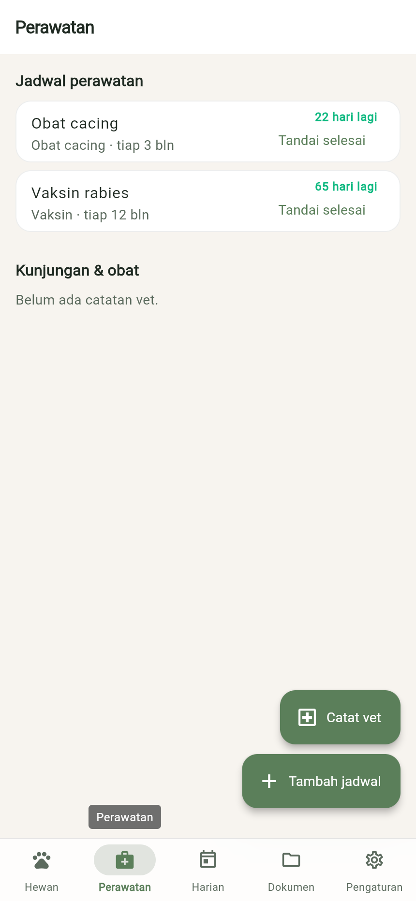
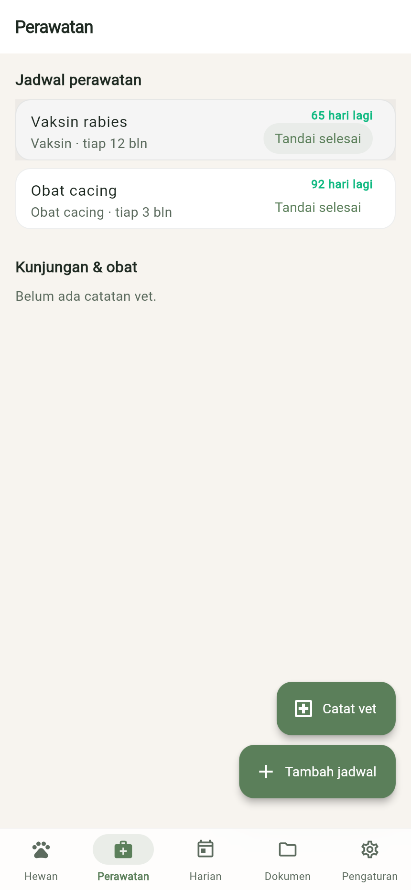
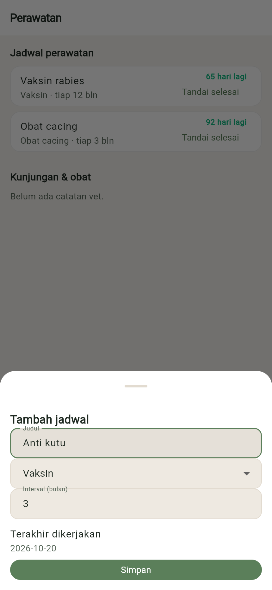
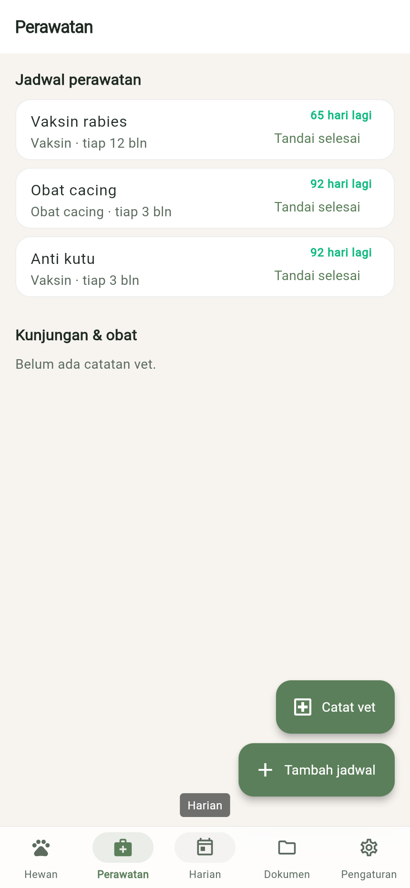

BASTP petgo / FLOW-CAR-01
Mengelola jadwal perawatan
- Role
- USR
- Modul
- CAR
- Kebutuhan
- FR-002
Pemilik melihat jadwal vaksin/obat cacing beserta sisa hari, menandai selesai, dan menambah jadwal baru.
- 18.6 s
Langkah 1: Buka Perawatan
Ketuk tab Perawatan: setiap jadwal menampilkan interval dan sisa hari menuju jatuh tempo.
- 210.7 s
Langkah 2: Tandai selesai
Ketuk Tandai selesai setelah perawatan dilakukan; tanggal hari ini tercatat dan jatuh tempo berikutnya dihitung ulang.
- 314.4 s
Langkah 3: Tambah jadwal
Ketuk Tambah jadwal, isi Judul, jenis, dan Interval (bulan) (minimal 1).
- 416.7 s
Langkah 4: Jadwal tersimpan
Ketuk Simpan. Jadwal baru masuk ke daftar perawatan.
Direkam terhadap flutter build web (lokal) oleh FLOW-CAR-01-T01 sebagai USR.
Hasil uji (4/4 lulus)
| TC | Jenis | Lapis | Skenario | Hasil |
|---|---|---|---|---|
FLOW-CAR-01-T01 | positive | unit | tandai selesai mencatat tanggal aktual dan menggeser jatuh tempo | pass |
FLOW-CAR-01-T02 | negative | unit | jadwal tanpa judul atau interval < 1 bulan ditolak | pass |
FLOW-CAR-01-T03 | edge | unit | batas urgensi: jatuh tempo hari ini terlewat, H-14 segera, H-15 aman | pass |
FLOW-CAR-01-T04 | corner | unit | interval melewati akhir tahun dan akhir bulan dijepit ke tanggal terakhir | pass |